SOmap-introduction
Ben Raymond, Michael Sumner, Dale Maschette, Anton Van de Putte
Source:vignettes/SOmap-introduction.Rmd
SOmap-introduction.RmdSOmap introduction
This vignette was adapted from the SCAR-EGABI Tools for Southern Ocean Spatial Analysis and Modelling course and Mapping in R workshop.
Background
Maps in R
The oldest and most core general mapping package in R is the maps package. It has a simple whole-world coastline data set for immediate use.
maps::map()
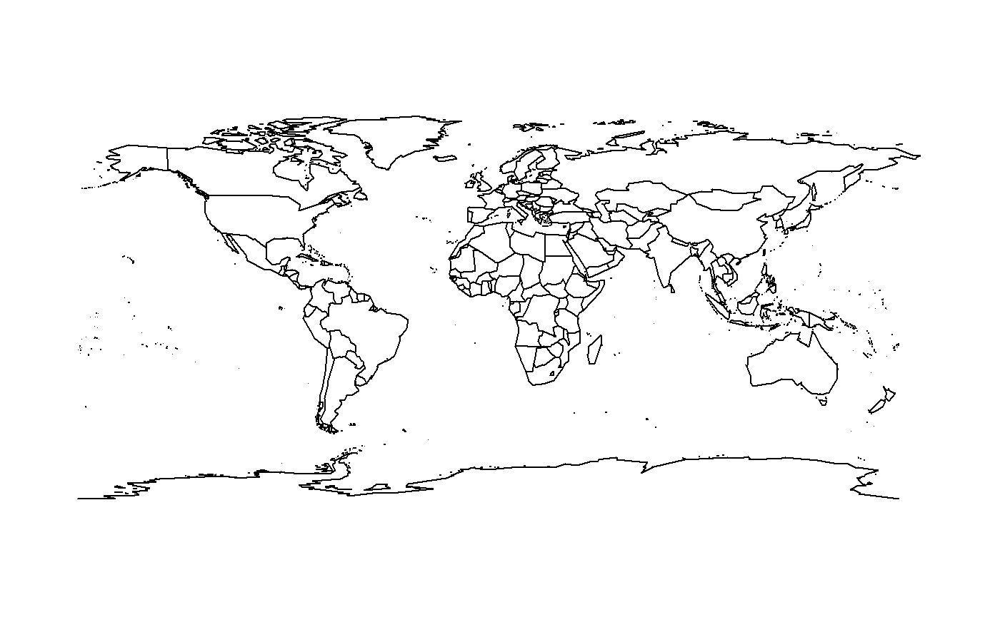
The data underlying this live map is available by capturing the output as an actual object. Notice that the coastline for Antarctica does not extend to the south pole, and that parts of Russia that are east of 180 longitude are not in the western part of the map.
m <- maps::map(plot = FALSE) lonlat <- cbind(m$x, m$y) plot(lonlat, pch = "+", cex = 0.4, axes = FALSE) lines(lonlat, col = "dodgerblue") abline(h = c(-90, 90), v = c(-180, 180))
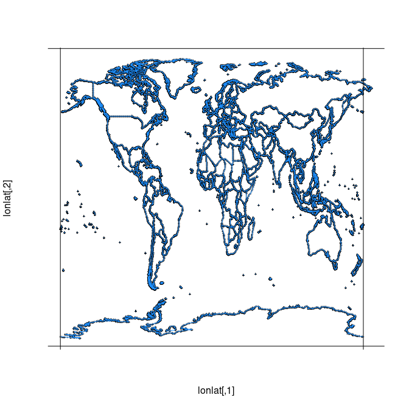
A very similar and more modern data set is available in the maptools package.
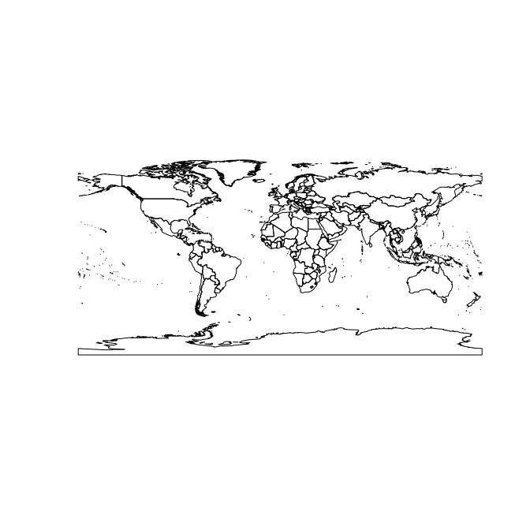
This data set aligns exactly to the conventional -180/180 -90/90 extent of the longitude/latitude projection.
plot(0, type = "n", axes = FALSE, xlab = "", ylab = "", xlim = c(-180, 180), ylim = c(-90, 90)) rect(xleft = -180, ybottom = -90, xright = 180, ytop = 90, border = "darkred", lwd = 4, lty = 2) plot(wrld_simpl, add = TRUE)
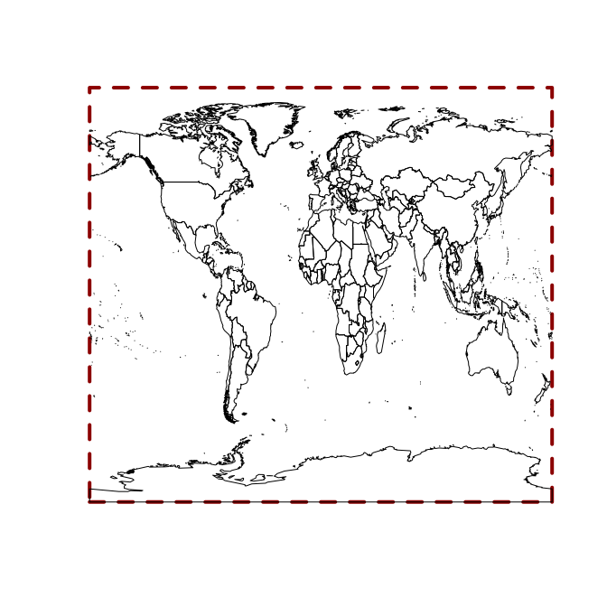
Exercises
- How can we find the longitude and latitude ranges of the maps data
mand the maptools datawrld_simpl? - Can we draw polygons with a fill colour with the maps package?
Answer 1: range(m$x, na.rm = TRUE) range(m$y, na.rm = TRUE) also m$range
Answer 2: polygon(lonlat, col = "grey") does not work, and map(mp, fill = TRUE, col = "grey") does not work, but maps::map(fill = TRUE, col = "grey") does seem to work.
What’s going on? Look at the very south-eastern corner of the map. The “coastline” has been extended to the very south boundary of the available area.
plot(0, type = "n", axes = FALSE, xlab = "", ylab = "", xlim = c(-150, 180), ylim = c(-90, -60)) plot(wrld_simpl, add = TRUE, col = "grey") rect(xleft = -180, ybottom = -90, xright = 180, ytop = 90, border = "darkred", lwd = 4, lty = 2) maps::map(add = TRUE, col = "dodgerblue", lwd = 3)
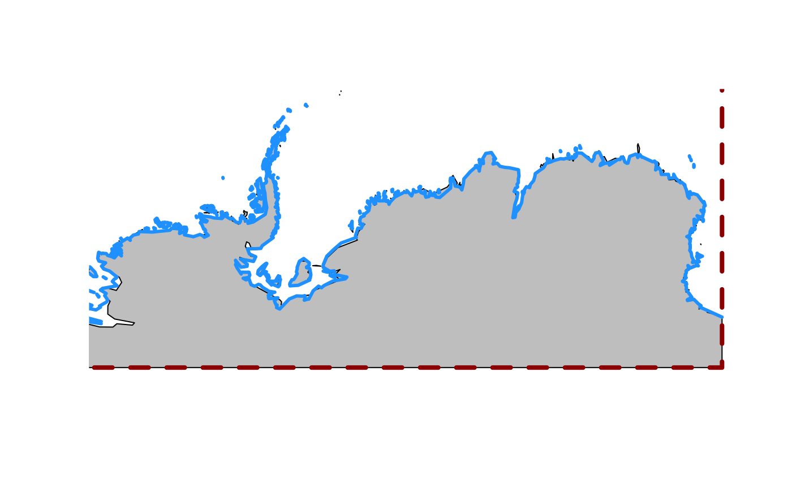
When we add the old maps coastline see that it does not extend to 90S and it does not traverse the southern boundary.
One reason for this is that if we choose a projection where the east and west edges of the Antarctic coastline meet then we get what looks a fairly clean join.
## scale factor f <- 3e6 plot(rgdal::project(lonlat, "+proj=laea +lat_0=-90 +datum=WGS84"), asp = 1, type = "l", xlim = c(-1, 1) * f, ylim = c(-1, 1) * f, xlab = "", ylab = "")
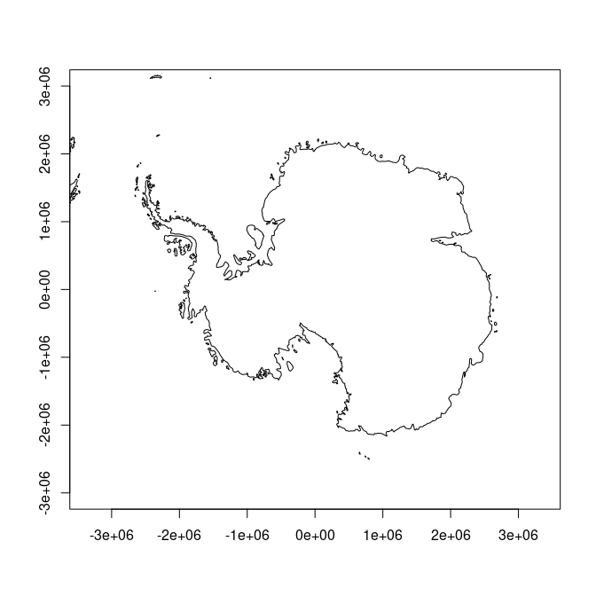
If we try the same with wrld_simpl it’s not as neat. We have a strange “seam” that points exactly to the south pole (our projection is centred on longitude = 0, and latitude = -90.
plot(sp::spTransform(wrld_simpl, "+proj=laea +lat_0=-90 +datum=WGS84"), asp = 1, xlim = c(-1, 1) * f, ylim = c(-1, 1) * f, xlab = "", ylab = "", lwd = 3) abline(v = 0, h = 0, lty = 2, col = "grey")
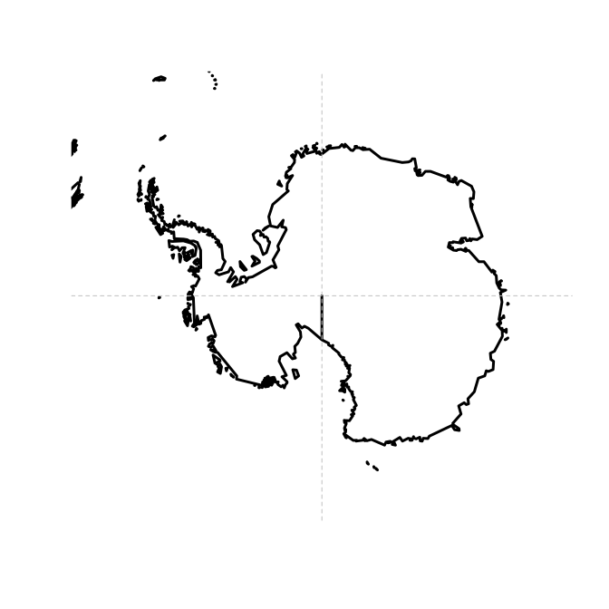
Let’s use the maps data!
In m we have the maps data structure, and this looks promising.
str(m) #> List of 4 #> $ x : num [1:82403] -69.9 -69.9 -69.9 -70 -70.1 ... #> $ y : num [1:82403] 12.5 12.4 12.4 12.5 12.5 ... #> $ range: num [1:4] -180 190.3 -85.2 83.6 #> $ names: chr [1:1627] "Aruba" "Afghanistan" "Angola" "Angola:Cabinda" ... #> - attr(*, "class")= chr "map" mp <- m pxy <- rgdal::project(lonlat, "+proj=laea +lat_0=-90 +datum=WGS84") mp$x <- pxy[,1] mp$y <- pxy[,2] mp$range <- c(range(mp$x,na.rm = TRUE), range(mp$y, na.rm = TRUE)) mp$range #> [1] -12709814 12704237 -12576156 12470787 plot(c(-1, 1) * f, c(-1, 1) * f, type = "n", asp = 1) maps::map(mp, add = TRUE)
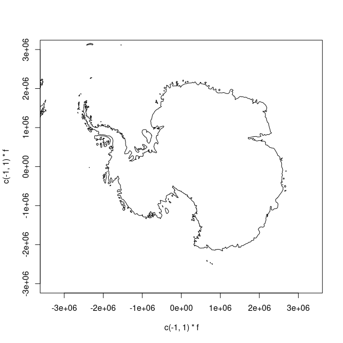
## but it doesn't take much to go awry plot(c(-1, 1) * f, c(-1, 1) * f, type = "n", asp = 1) maps::map(mp, add = TRUE, fill = TRUE, col = "grey")
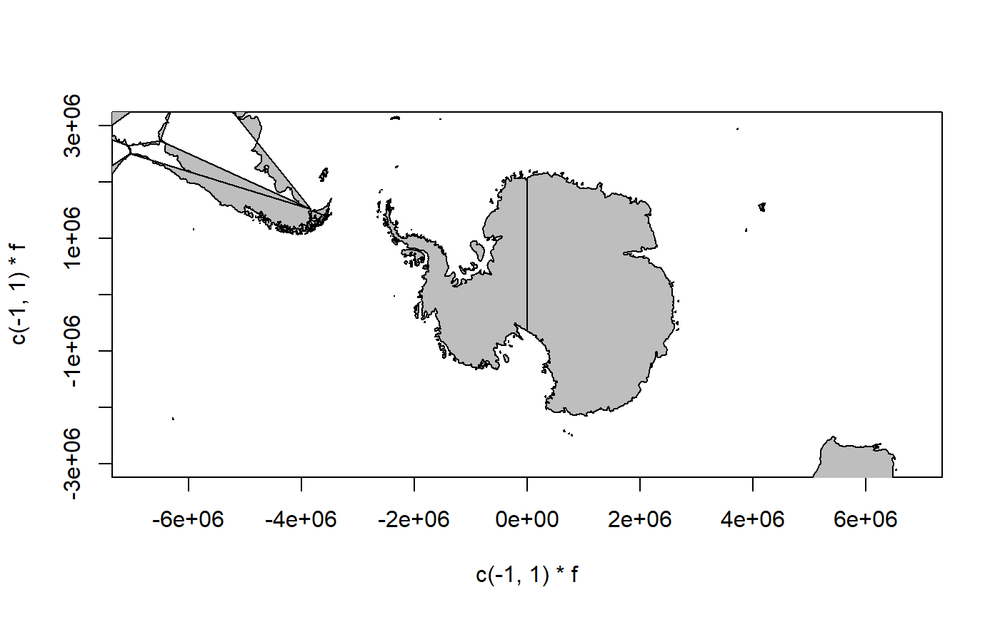
The problem is that the maps database has enough internal structure to join lines correctly, with NA gaps between different connected linestrings, but not enough to draw these things as polygons. A similar problem occurs in the default projection. While wrld_simpl has been extend by placing two dummy coordinates at the east and west versions of the south pole, this data set does not have those.
We have to look quite carefully to understand what is happening, but this is wrapping around overlapping itself and so close to the southern bound we barely notice.
plot(0, type = "n", axes = FALSE, xlab = "", ylab = "", xlim = c(-180, -110), ylim = c(-90, -60)) rect(xleft = -180, ybottom = -90, xright = 180, ytop = 90, border = "darkred", lwd = 4, lty = 2) maps::map(add = TRUE,col = "grey", fill = TRUE)

maps::map(col = "grey", fill = TRUE)
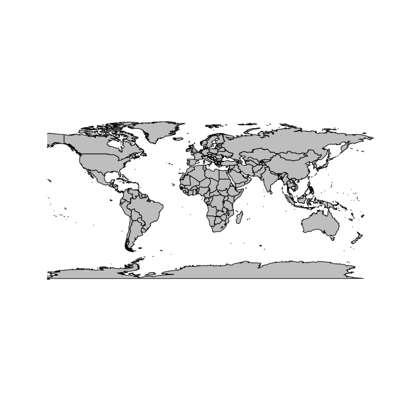
mpmerc <- m pxy <- rgdal::project(lonlat, "+proj=merc +datum=WGS84") mpmerc$x <- pxy[,1] mpmerc$y <- pxy[,2] mpmerc$range <- c(range(mpmerc$x,na.rm = TRUE), range(mpmerc$y, na.rm = TRUE)) mpmerc$range #> [1] -20037508 20037508 -20179524 18351859 ## the catastrophe made a little clearer plot(0, xlim = range(mpmerc$range[1:2]), ylim = c(mpmerc$range[1], 0)) maps::map(mpmerc, fill = TRUE, col = "grey", add = TRUE)
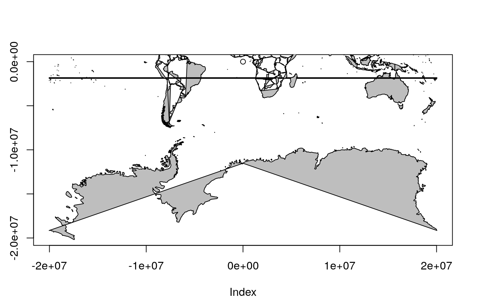
SOmap
The SOmap package is intended to solve some of these problems, and provide an easier way to produce nice-looking maps of Antarctica and the Southern Ocean. It is primarily focused on maps in polar stereographic projection (although the SOmap_auto function extends this to other projections). SOmap won’t necessarily get you exactly the map you want in every circumstance, but the idea is that in most cases it should get you close enough, and if need be you can make modifications to suit your exact purposes.
Please bear in mind that SOmap is still in development, and so its functionality (function parameters and/or behaviour) may change.
By default, SOmap works with base graphics (and associated functionality from packages such as raster and sp). It is also possible to work with ggplot2-based graphics, as described below.
Start by installing the SOmap package if you haven’t done so already:
remotes::install_github("AustralianAntarcticDivision/SOmap")
Then load the package:
library(SOmap) #> Loading required package: raster ## also define a colour map to use for some examples my_cmap <- colorRampPalette(c("#4D4140", "#596F7E", "#168B98", "#ED5B67", "#E27766", "#DAAD50", "#EAC3A6"))(51)
Circumpolar maps
A basic circumpolar map in polar stereographic projection. Here we save our map to the base_plot variable, so that we can use it again later without re-generating the map from scratch each time:
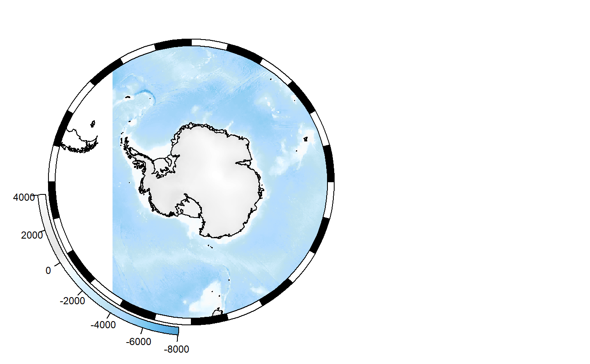
SOmanagement() provides a number of contextual layers such as MPA boundaries and management zones.
SOmap(trim = -40) ## plot to 40S ## add the exclusive economic zones management layer SOmanagement(eez = TRUE)

Adding points
## some longitude/latitude data library(sp) my_points_ll <- data.frame(lon = seq(0, 350, by = 10), lat = -55, z = runif(36)) coordinates(my_points_ll) <- c("lon", "lat") projection(my_points_ll) <- "+proj=longlat +datum=WGS84"
Our data need to be reprojected to match our map before plotting. The SOproj function does this:
## reproject to our SOmap projection my_points <- SOproj(my_points_ll) ## and plot plot(base_map) plot(my_points, col = "blue", add = TRUE)
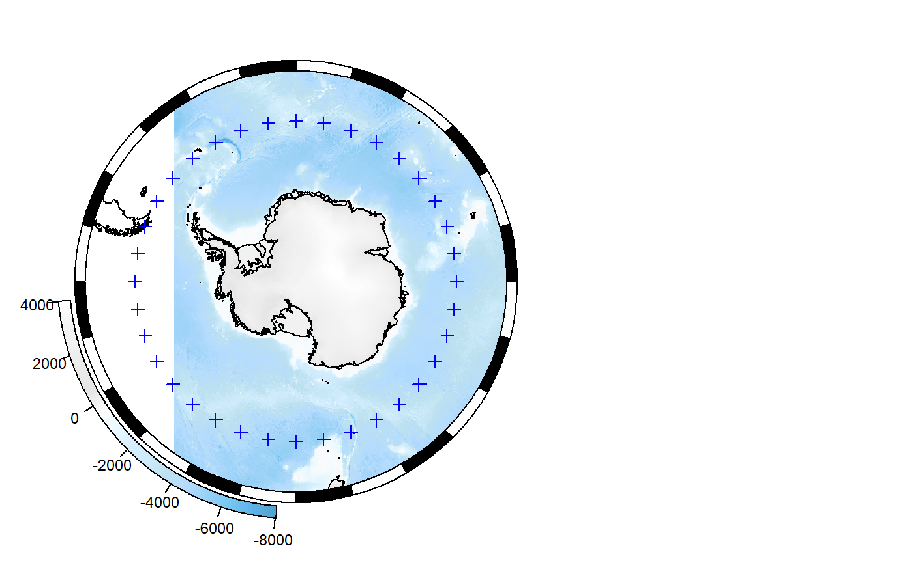
Or use SOplot to reproject and plot in one step:
Adding raster layers
First let’s construct some artificial raster data (in longitude-latitude space) for demonstration purposes:
library(raster) temp <- as.data.frame(expand.grid(lon = seq(100, 140, by = 0.25), lat = seq(-65, -45, by = 0.1))) temp$val <- sqrt((temp$lon - 120)^2/3 + (temp$lat - -40)^2/5) ## create raster object xr <- rasterFromXYZ(temp) projection(xr) <- "+proj=longlat +datum=WGS84"
SOplot will reproject and plot this for us:
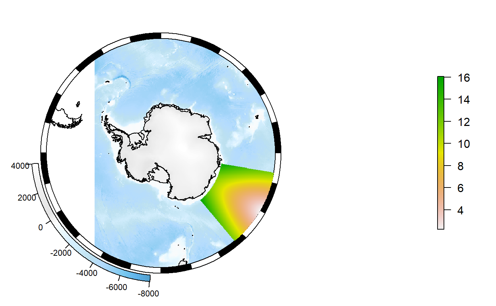
The legend is out of character with the rest of the map. We can use SOleg to fix that:
## draw the base map plot(base_map) ## add our raster SOplot(xr, legend = FALSE, col = my_cmap) ## add the legend SOleg(xr, position = "topright", col = my_cmap, ticks = 6, type = "continuous", label = "My variable")
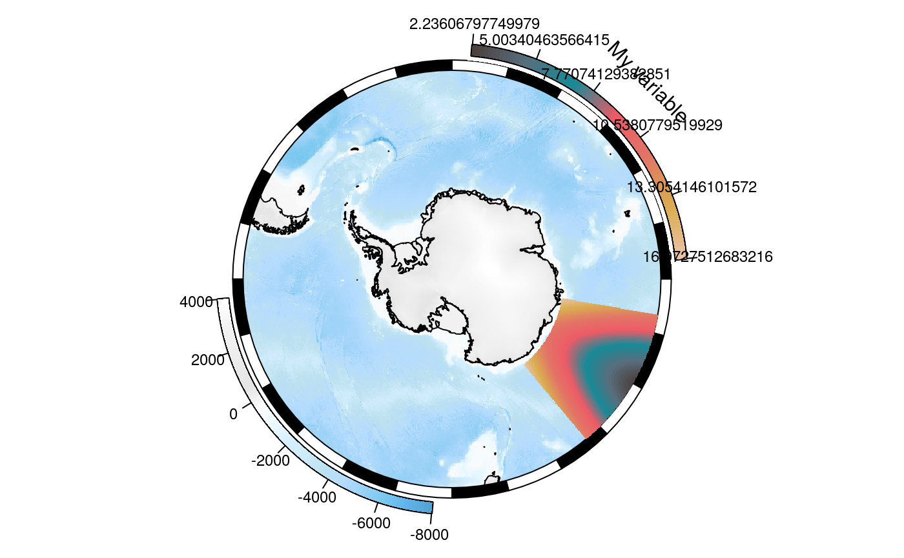
OK, well that worked but clearly the labels need tidying up. The easiest way is probably to set the number of decimal places in the label values via the rnd parameter:
plot(base_map) SOplot(xr, legend = FALSE, col = my_cmap) SOleg(xr, position = "topright", col = my_cmap, ticks = 6, rnd = 2, type = "continuous", label = "My variable")
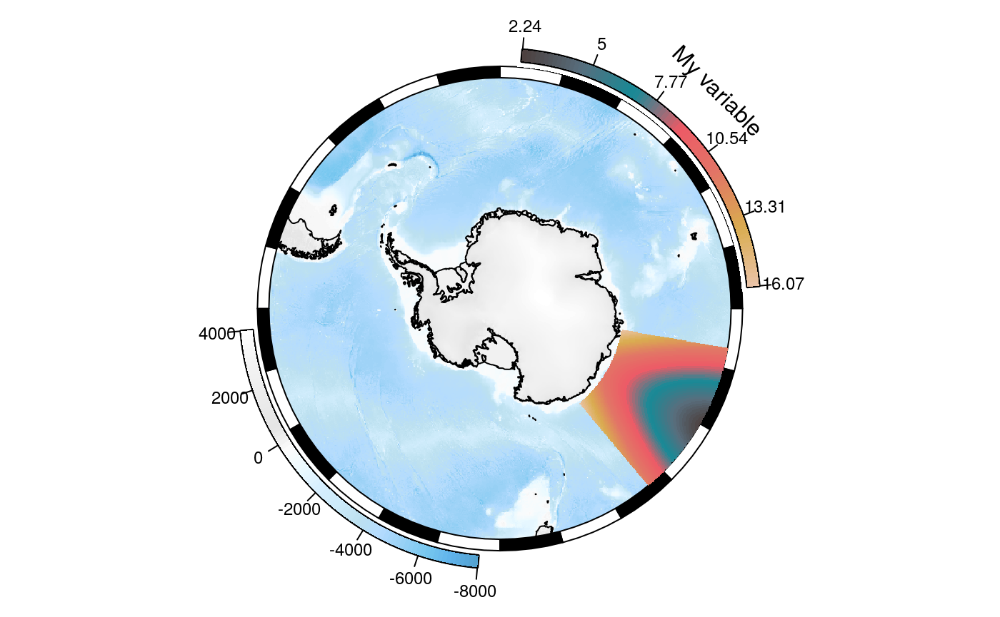
Alternatively, we could explicitly set the colour range and labels.
## draw the base map plot(base_map) ## add our raster, controlling the colour range to span the values 0 to 30 colour_breaks <- seq(0, 30, length.out = length(my_cmap) + 1) SOplot(xr, legend = FALSE, col = my_cmap, breaks = colour_breaks) ## add the legend, again controlling the colour range label_breaks <- seq(0, 30, length.out = 7) SOleg(position = "topright", col = my_cmap, breaks = label_breaks, type = "continuous", label = "My variable")

Note that if we don’t want to show the bathymetric legend, we may run into problems:
SOmap(bathy_legend = FALSE) ## suppress the bathy legend SOleg(position = "topright", col = my_cmap, breaks = label_breaks, type = "continuous", label = "My variable")
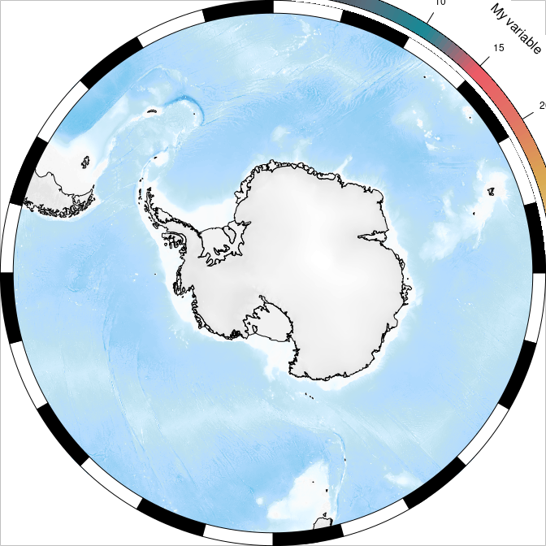
The legend has been chopped off because the layout has not left enough space around the map for the curved legend. There are a couple of ways around this. The elegant way is to specify bathy_legend = "space", which will leave appropriate space for a bathymetry legend but not actually plot it. This will also have the effect of leaving adequate space for other legends:
SOmap(bathy_legend = "space") SOleg(position = "topright", col = my_cmap, breaks = label_breaks, type = "continuous", label = "My variable")
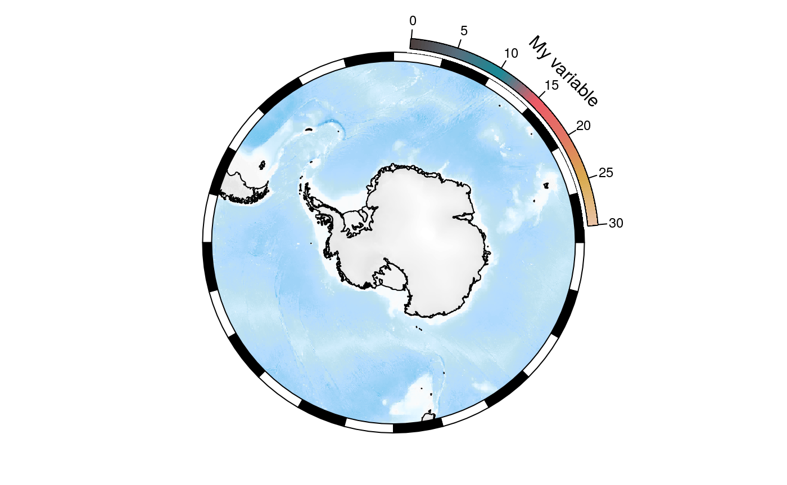
The second, rather hackier way is to generate the SOmap object with the bathymetric legend, but then remove the bathymetric legend before plotting:
temp <- base_map temp$bathy_legend <- NULL ## remove the bathy legend plot(temp) SOleg(position = "topright", col = my_cmap, breaks = label_breaks, type = "continuous", label = "My variable")
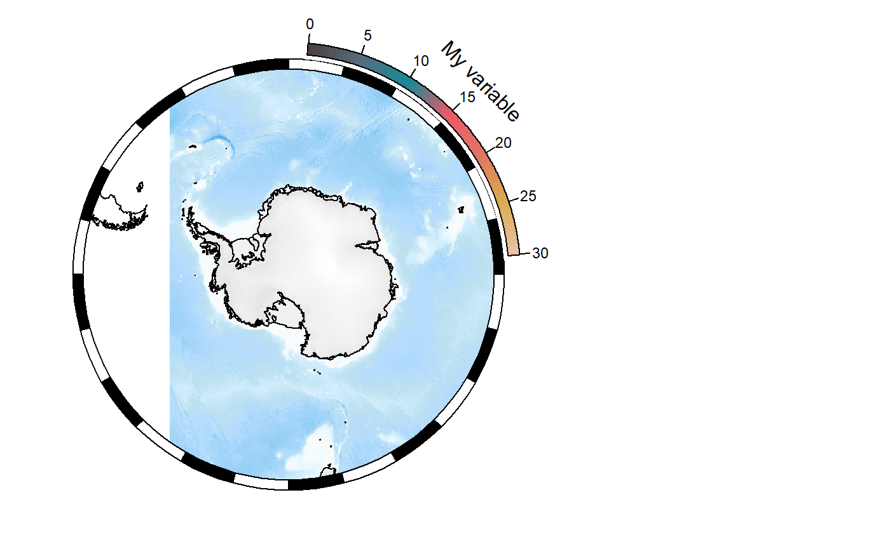
See the Modifying map objects section below for more details on modifying map objects.
Multiple rasters:
xr2 <- raster::shift(xr, -70) ## offset in longitude plot(base_map) SOplot(xr, legend = FALSE, col = my_cmap) SOplot(xr2, legend = FALSE, col = my_cmap)
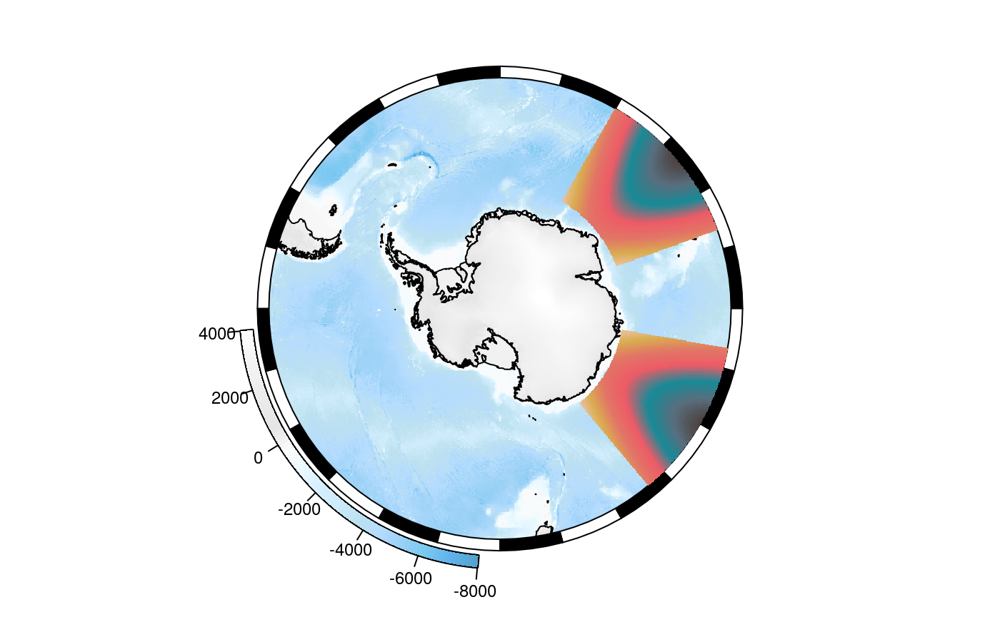
Create a raster from points
Let’s say that we have a large number of points that we wish to add to the map. We could simply add them:
points <- data.frame(lon = runif(1000, min = 30, max = 90), lat = runif(1000, min = -70, max = -50)) plot(base_map) SOplot(x = points$lon, y = points$lat, pch = 19, col = 2) #> No projection provided, assuming longlat
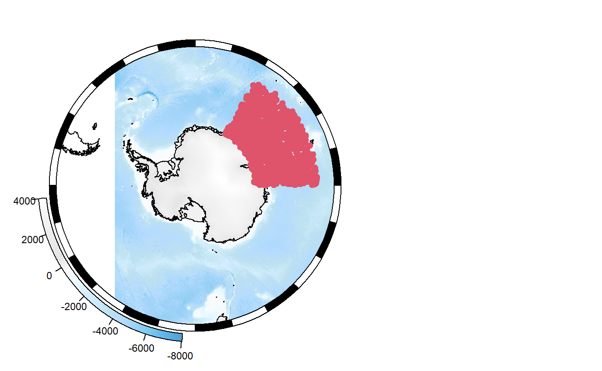
However, the overlap of the points reduces the utility of the map. One option is to create a density layer, showing the number of points that fall into each cell of a raster grid. The SObin function can do this for us:
plot(base_map) SObin(x = points$lon, y = points$lat, dim = c(100, 100), col = viridis::viridis(100), legend = FALSE, add = TRUE) #> No projection provided, assuming longlat
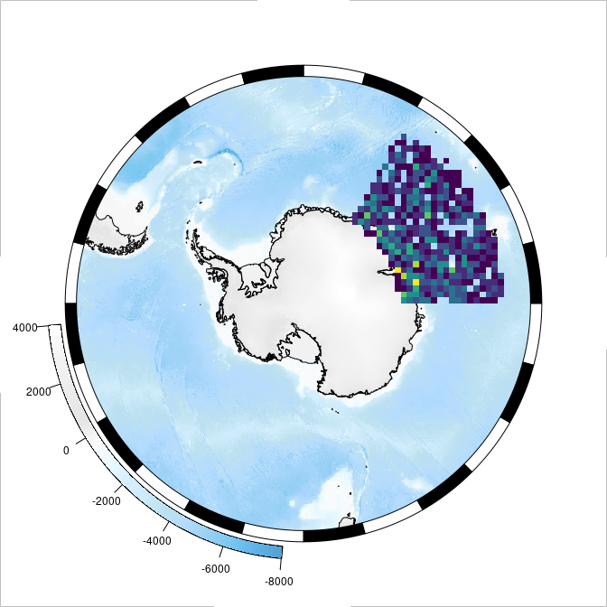
Non-circumpolar maps
The SOmap_auto function will take your input data and make a guess at an appropriate projection and extent to use. Note that this is not always going to guess the best projection and extent, so you should view it as a starting point from which you can generate a map to your exact requirements.
Use the elephant seal track data bundled with the package:
ellie <- SOmap_data$mirounga_leonina ## construct and plot the map SOmap_auto(ellie$lon, ellie$lat)
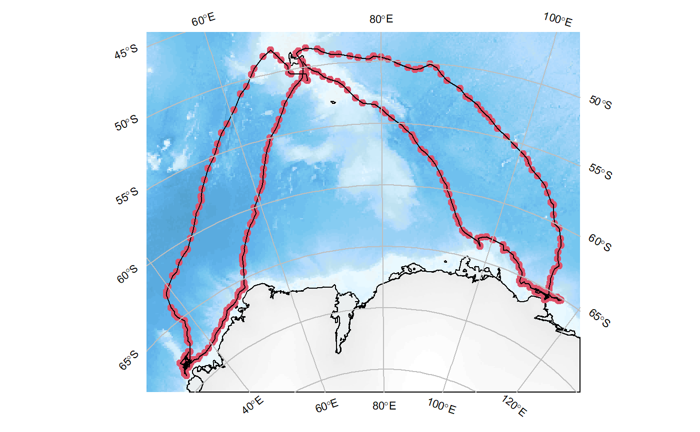
Just a blank map to which you could add other things:
SOmap_auto(ellie$lon, ellie$lat, input_points = FALSE, input_lines = FALSE)
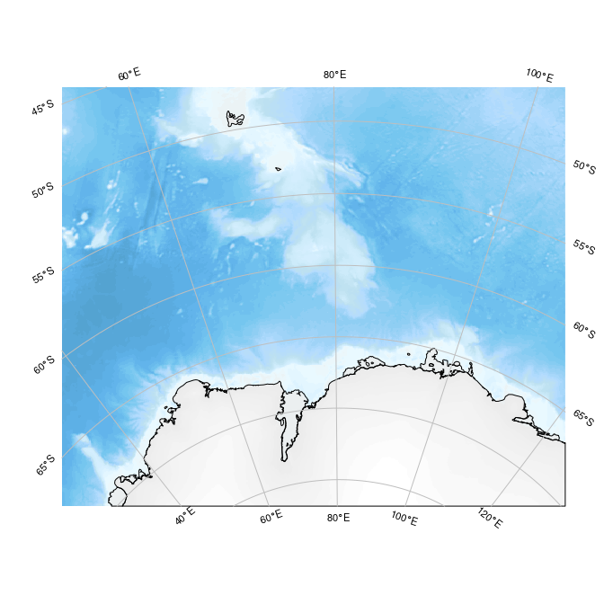
You can pass a raster as input data, but note that it won’t plot the raster (it uses its extent to infer an appropriate extent for the map):
SOmap_auto(xr)
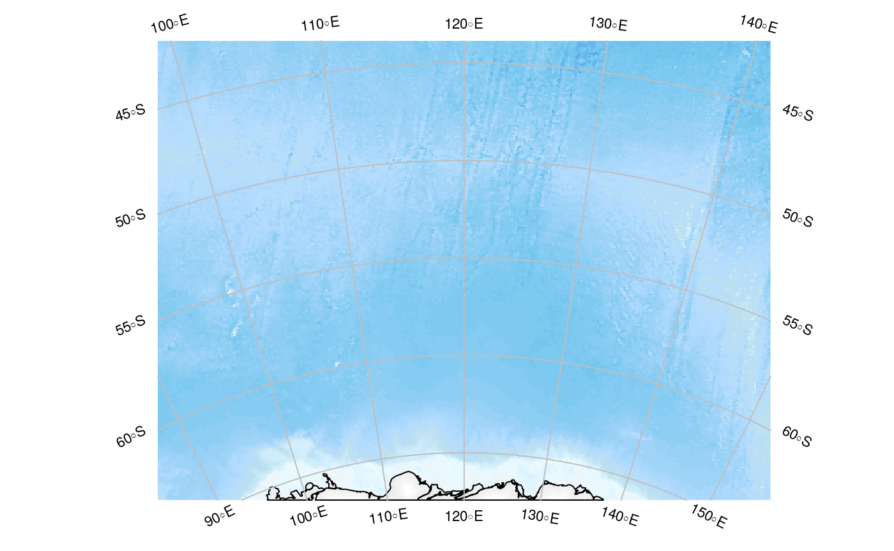
But we can add the raster if we wish:
SOmap_auto(xr) SOplot(xr, col = my_cmap)
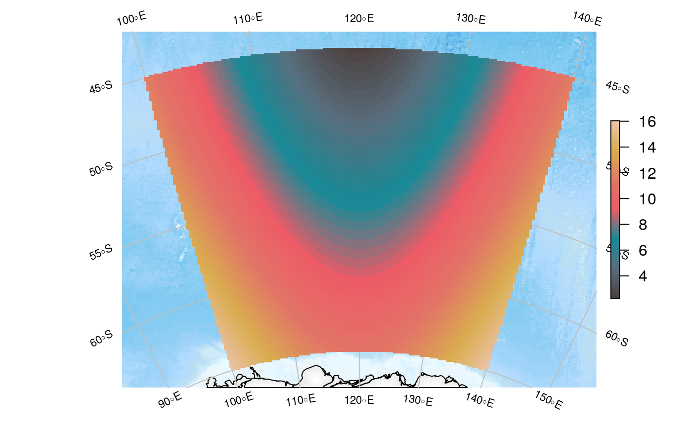
We can force a particular projection:
SOmap_auto(xr, target = "laea", centre_lon = 147, centre_lat = -42) SOplot(xr, col = my_cmap)
Same but by supplying a full proj4 string to target:
SOmap_auto(xr, target = "+proj=laea +lat_0=-42 +lon_0=147") SOplot(xr, col = my_cmap)
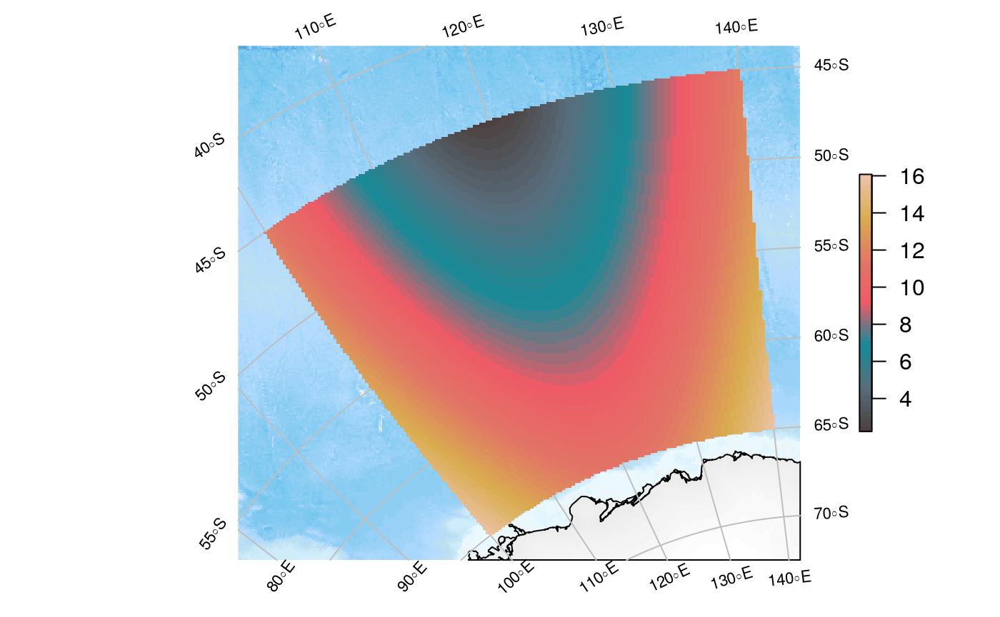
See the SOmap_auto vignette for more examples.
Plotting via ggplot2
The SOmap and SOmap_auto functions do their plotting using base graphics. If you are more comfortable working with ggplot2, this is also possible. The SOgg function takes an object created by one of those functions (using base graphics) and converts it to use ggplot2 graphics instead. As with other SOmap functions, this returns an object (of class SOmap_gg or SOmap_auto_gg) that contains all of the information needed to generate the map. Printing or plotting this object will cause it to construct a ggplot object. Printing or plotting that object will cause it to be drawn to the graphics device, just like any other ggplot object.
myplotgg <- SOgg(base_map) ## creates a SOmap_gg object class(myplotgg) #> [1] "SOmap_gg" my_ggplot <- plot(myplotgg) ## creates a ggplot object class(my_ggplot) #> [1] "gg" "ggplot" plot(my_ggplot) ## plot it
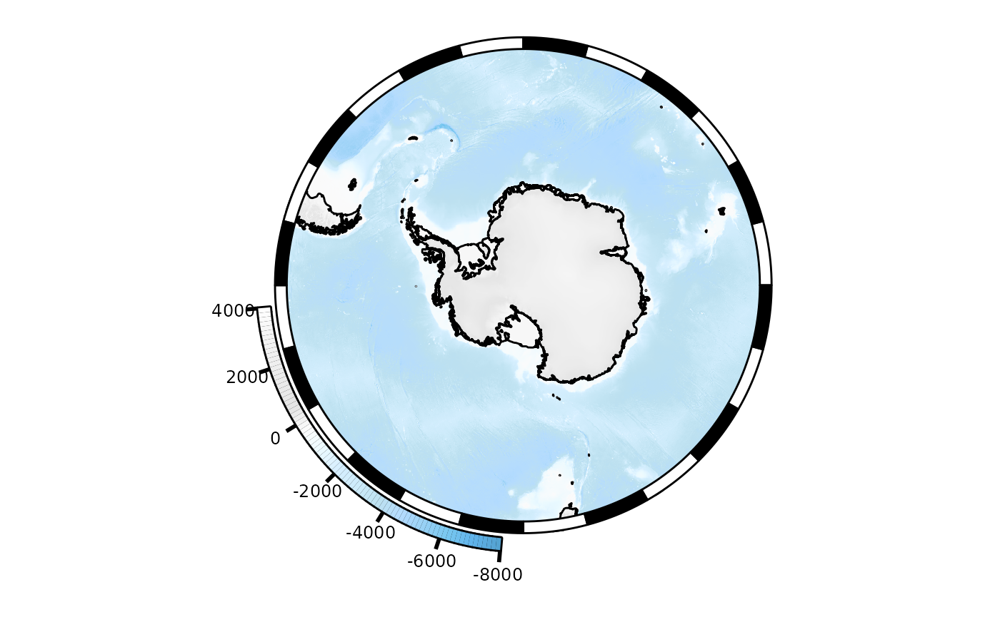
Or in one step (this will cause myplot to be converted to SOmap’s internal gg format, then a ggplot object constructed from that, then that object will be plotted):
SOgg(base_map)
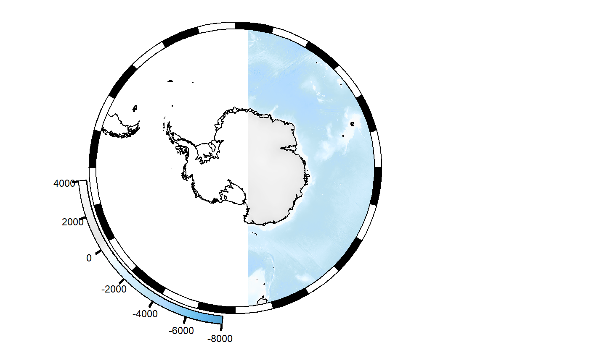
Modifying map objects (advanced usage)
The goal of SOmap is to make it fairly easy to produce a fairly-good-looking map that will be adequate for most mapping requirements. It will never be possible to automatically produce a perfect map in every circumstance, but the aim is to have a low-effort way of getting fairly close most of the time.
This section describes some approaches to modifying a map to get it closer to your particular needs. Be warned: depending on the exact modifications needed, this might get you pretty close to the crumbling edge of SOmap development. In particular, anything that requires modifying the internal structure of an SOmap object may change in the future (with luck, we’ll make this sort of thing easier - but we’re not there yet.)
Modifying base graphics maps
Calls to SOmap(), SOmanagement(), SOmap_auto() return an object of class SOmap, SOmap_management, or SOmap_auto. These objects contain all of the data and plotting instructions required to draw the map. Calling print() or plot() on one of these objects will cause that code to be executed, and the object to be drawn in the current graphics device. Hence, calling SOmap() directly without assigning the result to a variable will make it appear in the graphics device, because the returned object is being printed to the console (and thus triggering the print method). But you can also assign the result to a variable, e.g. myplot <- SOmap() and then explicitly plot the object with plot(myplot). The advantage of this is that you can potentially manipulate the myplot object to make changes to the map before plotting it.
Note, this is likely to be fragile. Proceed at your own risk!
mymap <- base_map names(mymap) #> [1] "projection" "target" "straight" "trim" #> [5] "bathy" "box" "plot_sequence" "coastline" #> [9] "ice" "outer_mask" "bathy_legend" "border"
The object contains a plot_sequence component, which defines the order in which each part of the plot is drawn. The other components of the object contain the code required to draw each part. Take e.g. the ice component (this is the ice shelves, glacier tongues, etc). This is a list (in this case with only one element). Each element of the list is an object of class SO_plotter, which is a SOmap-specific object that specifies a function to run along with arguments to pass to it:
str(mymap$ice) #> List of 1 #> $ :List of 2 #> ..$ plotfun : chr "plot" #> ..$ plotargs:List of 4 #> .. ..$ x :sfc_POLYGON of length 354; first list element: List of 1 #> .. .. ..$ : num [1:5, 1:2] 1022981 1026000 1021994 1021935 1022981 ... #> .. .. ..- attr(*, "class")= chr [1:3] "XY" "POLYGON" "sfg" #> .. ..$ col : logi NA #> .. ..$ border: chr "black" #> .. ..$ add : logi TRUE #> ..- attr(*, "class")= chr "SO_plotter"
We can modify the function and/or its arguments:
mymap$ice[[1]]$plotargs$col <- "green"
plot(mymap)

We can remove entire components, either by setting the component to NULL or removing its name from the plot_sequence:
temp <- mymap temp$coastline <- NULL ## set the coastline object to NULL temp$plot_sequence <- setdiff(temp$plot_sequence, "ice") ## remove "ice" from plot_sequence plot(temp) ## map without coastline or ice shown
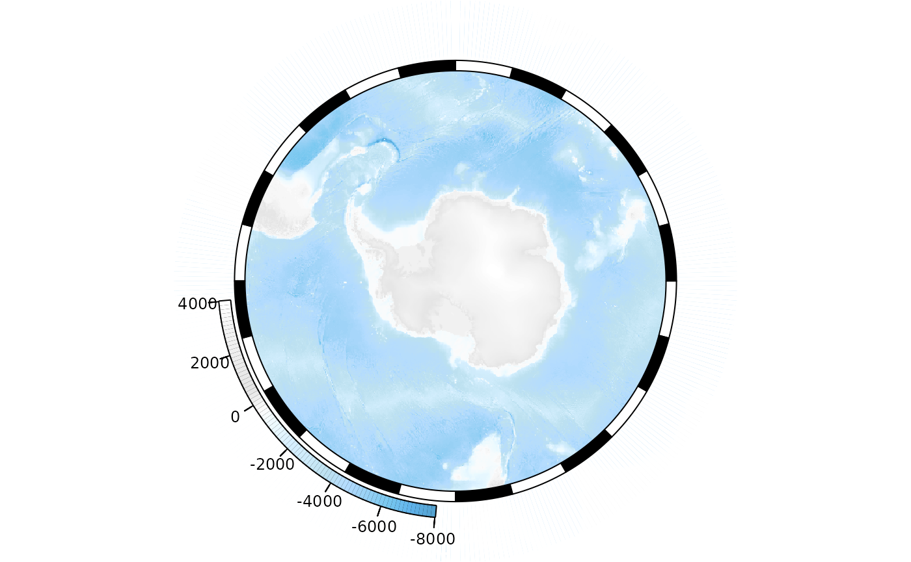
But note that some elements are required. In particular, the bathymetry layer can’t currently be removed because the code that draws this is also the code that creates the plot page via plot.new(). The code below would fail outright if there was no existing existing plot. If there was an existing plot in the graphics device, this code would run but give unpredictable results because it would draw on top of the previously-setup plot:
## code not run here temp <- mymap temp$bathy <- NULL plot(temp)
One way around this would be to simply replace all of the bathymetric data values with NAs. The plotting code would still have the extent of the bathymetric layer that it needs in order to set up the plot, but no data would be shown:
temp <- mymap ## the bathy data is held in temp$bathy[[1]]$plotargs$x ## and it's a raster, so we can set its values to NA with raster::values(temp$bathy[[1]]$plotargs$x) <- NA_real_ temp$bathy_legend <- NULL plot(temp)
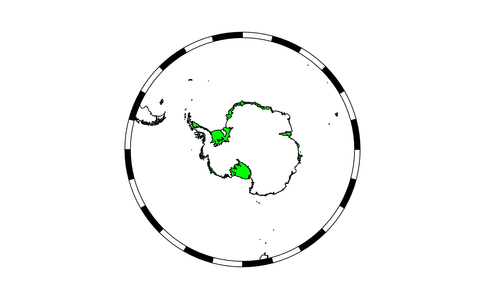
We could also replace the bathymetry data with another raster object. Note that we do need to be careful about the extent and projection of this raster. For example, replacing the bathymetry raster with the ice raster (which has the same polar stereographic projection but smaller extent) gives:
temp <- mymap temp$bathy[[1]]$plotargs$x <- ice temp$bathy_legend <- NULL plot(temp)
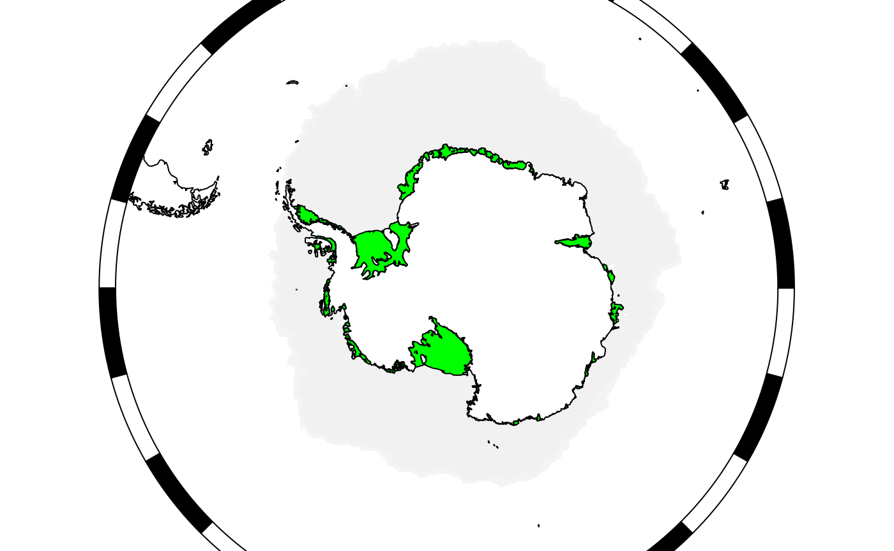
It’s chopped off because the extent of the ice raster is being used to set the plot extent. But if we extend the ice raster to match the map extent:
temp <- mymap temp$bathy[[1]]$plotargs$x <- raster::extend(ice, mymap$target) temp$bathy_legend <- NULL plot(temp)
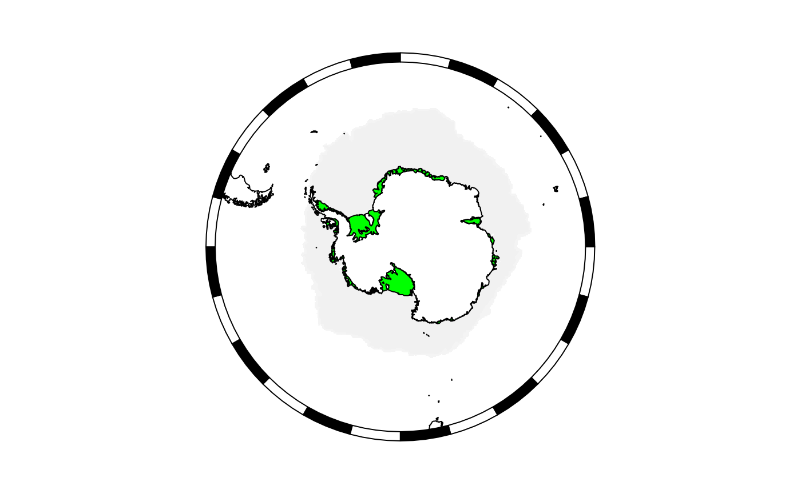
Combining map objects
A new function in SOmap version 0.6 is SOmerge, which can take separate objects and combine them into a single map. For example:
mymap <- SOmap(bathy_legend = "space") mylegend <- SOleg(x = runif(100), position = "topright", col = viridisLite::viridis(80), breaks = c(0.1, 0.2, 0.5, 0.9), trim = -45, label = "Thing", rnd = 1, type = "continuous") mymgmt <- SOmanagement(eez = TRUE, basemap = mymap) merged <- SOmerge(mymap, mymgmt, mylegend) plot(merged)
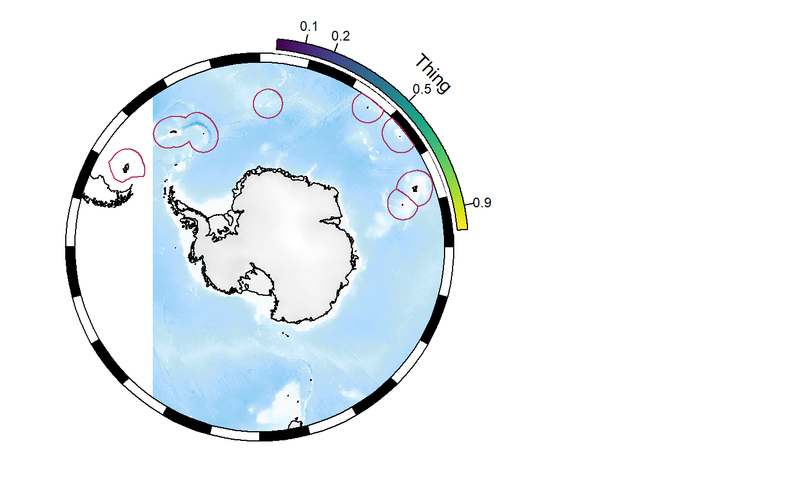
Modifying ggplot maps
We can modify ggplot2-based maps at two levels.
Modifying the ggplot object.
Remember that printing or plotting a SOmap_gg object produces a ggplot object. This can be modified by adding e.g. layers or themes just like a normal ggplot. Remember to load the ggplot2 library now that we are using ggplot2 functions directly.
library(ggplot2) my_ggplot + geom_point(data = as.data.frame(my_points), aes(lon, lat, colour = z), size = 3) + scale_colour_distiller(palette = "Spectral")
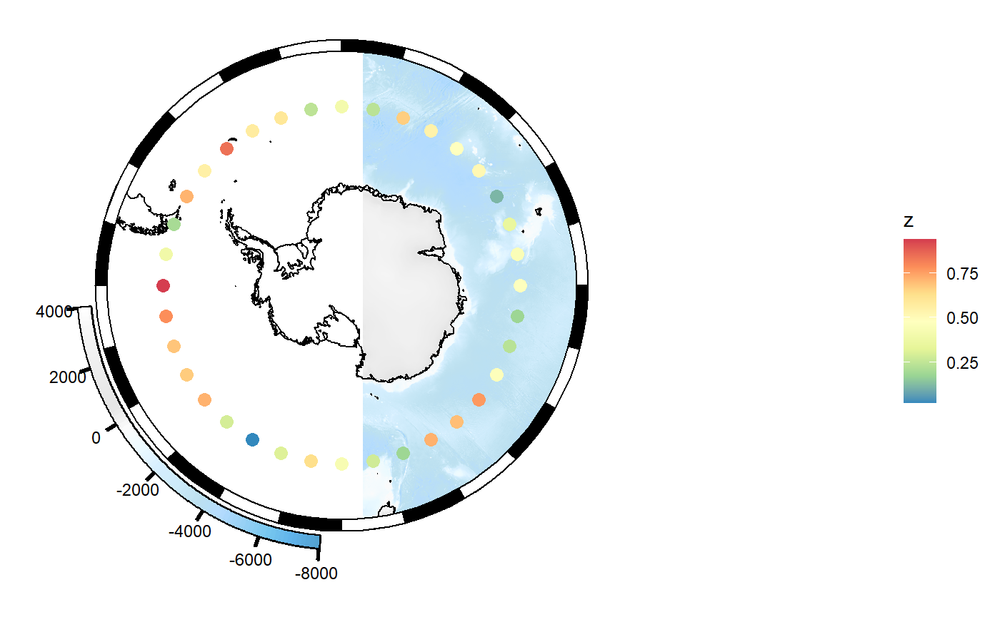
Multiple rasters or multiple sets of points gets tricky if they are on different scales, because ggplot2 is only designed to work with a single colour scale per geometry type. You can try your luck with the ggnewscale or relayer packages, although both are in a fairly experimental stage of development.
## remotes::install_github("clauswilke/relayer") library(relayer) plot(SOgg(SOmap(straight = TRUE))) + rename_geom_aes(geom_raster(data = as.data.frame(SOproj(xr), xy = TRUE), aes(x = x, y = y, fill2 = val)), new_aes = c(fill = "fill2")) + scale_fill_gradientn(aesthetics = "fill2", colors = my_cmap, na.value = NA, name = "My variable", guide = "legend")
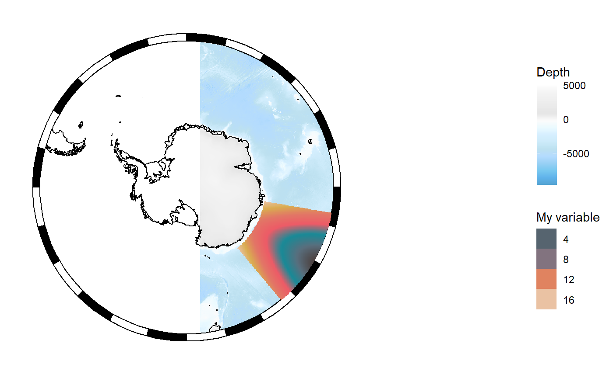
## remotes::install_github("eliocamp/ggnewscale") library(ggnewscale) plot(SOgg(SOmap(straight = TRUE))) + new_scale_fill() + geom_raster(data = as.data.frame(SOproj(xr), xy = TRUE), aes(x = x, y = y, fill = val)) + scale_fill_gradientn(colors = my_cmap, na.value = NA, name = "My variable")
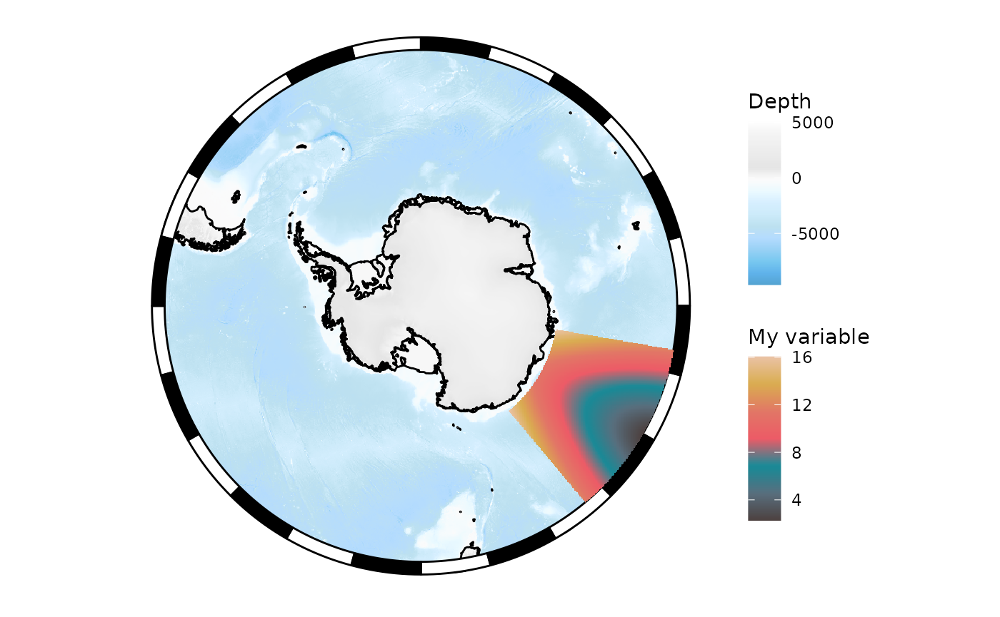
Modifying the SOmap_gg object
SOmap_gg objects are similar in structure to SOmap objects, in that they contain all of the data and plotting instructions required to draw the map:
names(myplotgg) #> [1] "projection" "target" "straight" "trim" #> [5] "init" "bathy" "coord" "plot_sequence" #> [9] "scale_fill" "bathy_legend" "coastline" "ice" #> [13] "axis_labels" "theme" "border"
However, instead of base plotting functions, SOmap_gg objects use ggplot2 function calls, e.g.:
myplotgg$ice[[1]]$plotfun #> [1] "ggplot2::geom_sf"
We can modify these functions and/or arguments in a similar manner to SOmap objects.
myplotgg$ice[[1]]$plotargs$fill <- "green"
plot(myplotgg)
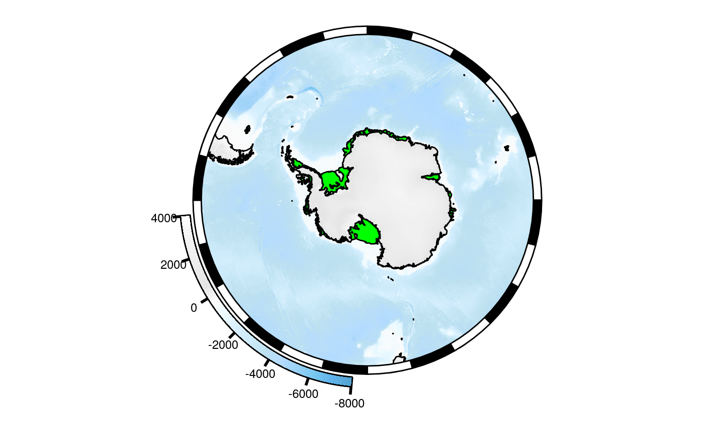
Or remove the bathymetric raster layer:
temp <- myplotgg temp$bathy <- NULL temp$bathy_legend <- NULL plot(temp)
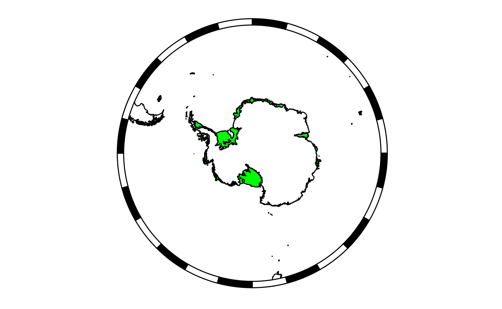
Or replace it with a different raster (use the ice raster as an example):
temp <- myplotgg ## convert ice raster to suitable data.frame ice_raster_as_df <- raster::as.data.frame(SOproj(ice), xy = TRUE) names(ice_raster_as_df)[3] <- "ice" ## add this to our object in place of bathy temp$bathy <- SO_plotter(plotfun = "ggplot2::geom_raster", plotargs = list(data = ice_raster_as_df, mapping = aes_string(fill = "ice"))) ## change the colour scale temp$scale_fill[[1]]$plotargs <- list(colours = my_cmap, na.value = "#FFFFFF00", guide = FALSE) ## remove the bathy legend temp$bathy_legend <- NULL plot(temp)
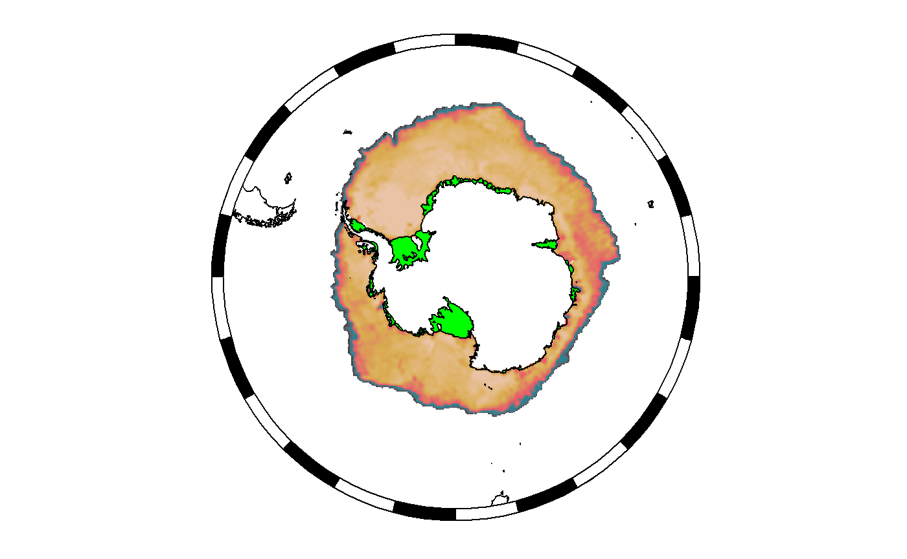
Other SOmap gotchas
Some other things worth noting.
Automatic printing and for-loops
If you type a variable/object name directly into the console then it triggers that object’s print method automatically. Typing SOmap() at the console returns an object of class SOmap, and because it’s happening at the console that object’s print method is called, which causes the map to be plotted in the current graphics device.
However, R turns off automatic printing inside for loops and functions. So this code:
for (i in 1:5) { SOmap_auto() }
won’t produce anything, because the print method never gets called. If you are generating maps using loops, you will need to explicitly call the print method:
for (i in 1:5) { print(SOmap_auto()) }
Supporting data for maps
When constructing maps, we commonly want to show features like oceanographic fronts, ice extent, coastline, place names, and MPA boundaries. There are a few sources of such data:
- some layers are bundled into
SOmap, see theSOmap::SOmap_dataobject - antanym provides access to the SCAR Composite Gazetteer of place names
- the quantarcticR package provides access to Quantarctica data layers.